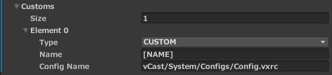

How to cutomise the batch file settings?
To cutomise the batch file settings, please follow the step below:
Go to the GameObject
VGear,VGear (Script) > [System] > Buid Batch.By default, there are some predefined environments for building batches, including
PC,HMD,CAVEandDOME.Add a new element by changing the
Sizeof the listCustoms.
For each element, there are
Type,NameandConfig Namecan be modified.Modify the
Typewith different environment types if needed, theNameandConfig Namewill be changed automatically.Namewill be concatenated to the application name into the batch file generated. The default value will be the chosen environment type warpped by bracket.Config Namestores the path of the configuration file of the application. The default value will be the corresponding config of the chosen environment type. ForCAVEandDOME, two batch files will be generated. TakeCAVEas example,applicationName_[CAVE].batandapplicationName_[TEST][CAVE].batwill be generated, the former loading theconfigCAVE.vxrcfile in%VOTANIC_PATH%/Configs/, the latter loading the[output folder]\VotanicXR\Configs\ConfigCAVE.vxrc. For other environment types, only one batch file will be generated with loading[output folder]\VotanicXR\Configs\{Config Name}.After build the project, the batch files will be built with customized settings.